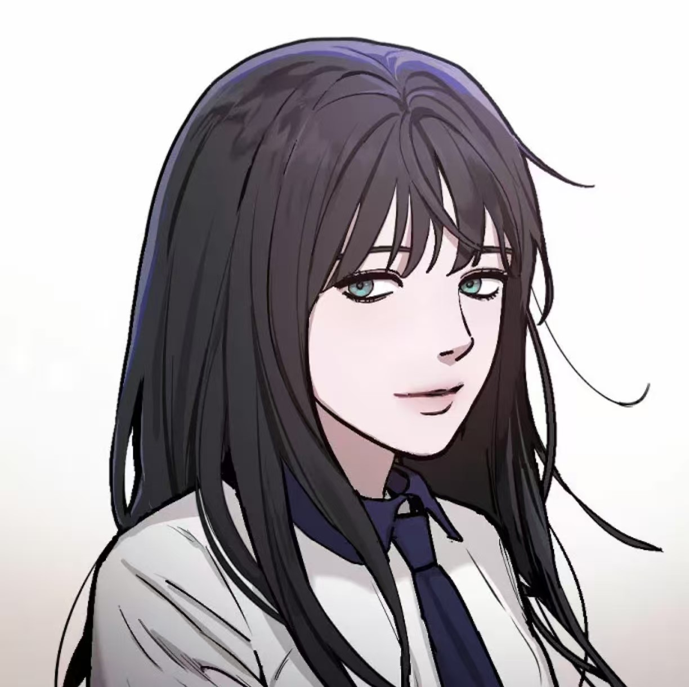
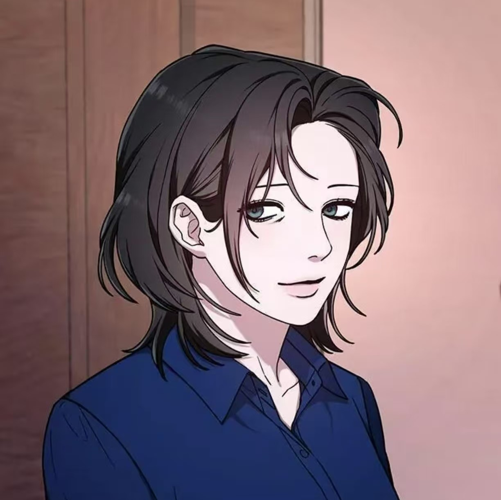

Main Characters

Name: Gil So-myeong
The "perfect daughter," who has been living according to her mother's standards since childhood, is secretly investigating her mother's secret.

Name:Myong So Min
A university chemistry professor and the mother of the main character Ji Xiaoming, she has a strong desire to control her daughter's life and study, hoping to cultivate her daughter into a perfect look in her mind, becoming the second perfect "self".